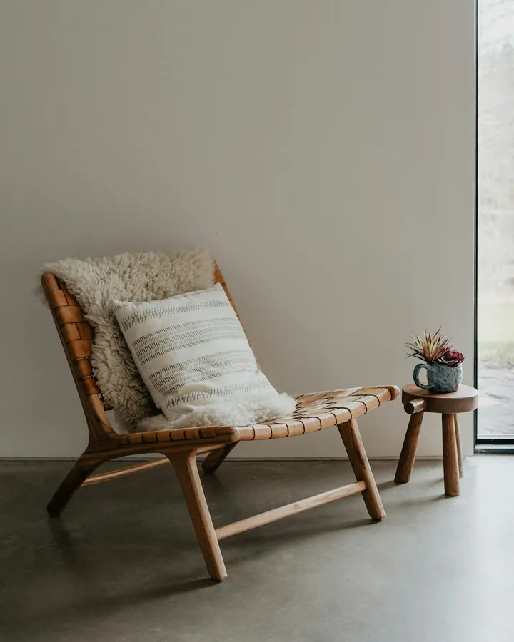
Una tarde
sin pendientes.
Luz baja, texturas suaves y un lugar para vos.
No hace falta encontrarlo todo.
A veces, mirar con calma ya es un buen plan.

Luz baja, texturas suaves y un lugar para vos.

Discos, madera y la luz justa para escuchar.
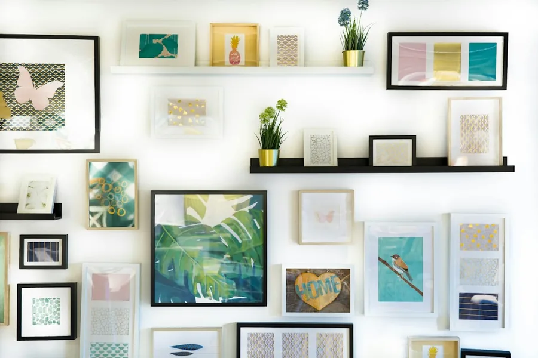
Marcos, tinta y piezas que conversan entre sí.
24 piezas para mirar a tu ritmo.
 Modelo 3D ilustrativo
Modelo 3D ilustrativoUna luz bajita para bajar el ritmo.
 Modelo 3D ilustrativo
Modelo 3D ilustrativoCalidez que queda suspendida.
 Modelo 3D ilustrativo
Modelo 3D ilustrativoUna pared que guarda recuerdos.
 Modelo 3D ilustrativo
Modelo 3D ilustrativoUn lugar para no mirar la hora.
 Modelo 3D ilustrativo
Modelo 3D ilustrativoEl ritual empieza al elegir un disco.
Modelo 3D ilustrativoMadera, aguja y una pausa.
Marcos distintos, una misma conversación.
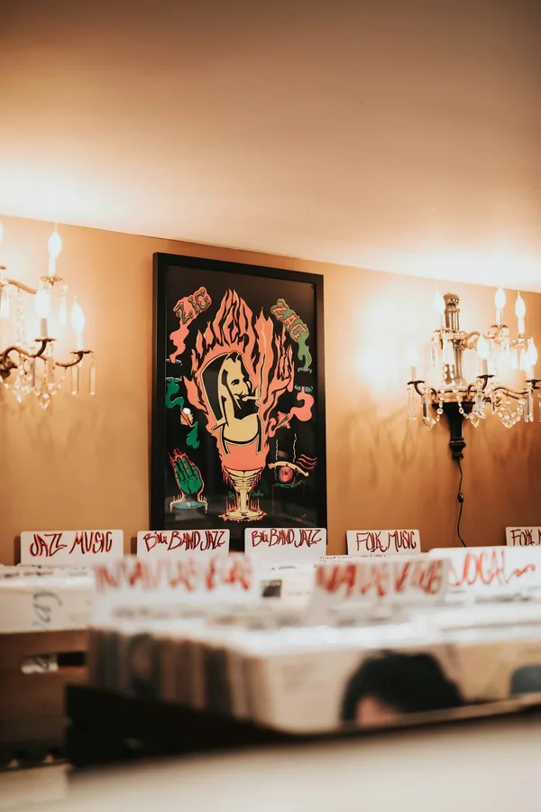
Papel que le cambia el tono al día.
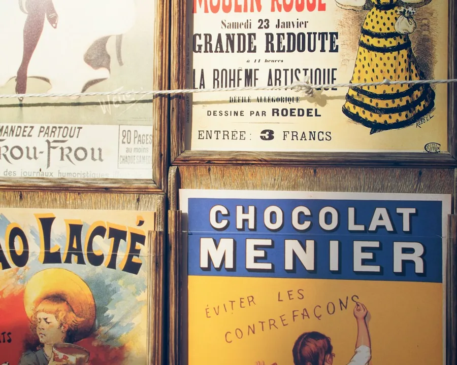
Tipografía con algo para contar.
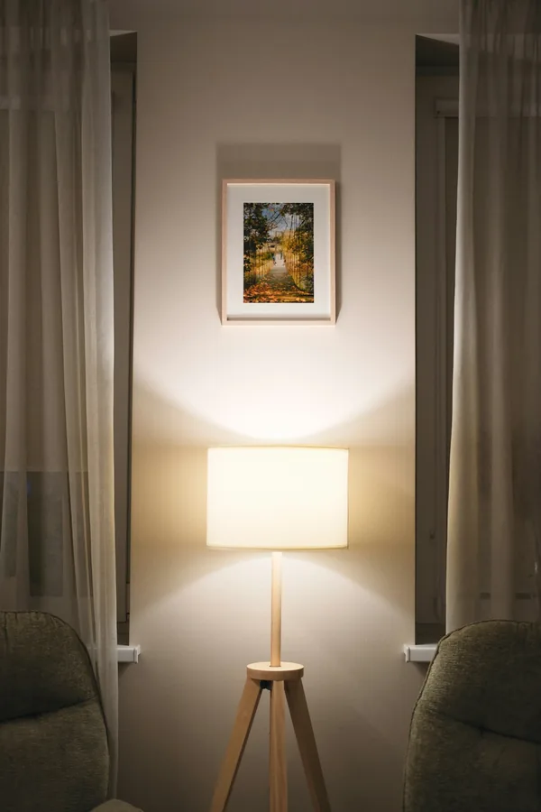
Un paisaje para quedarse mirando.
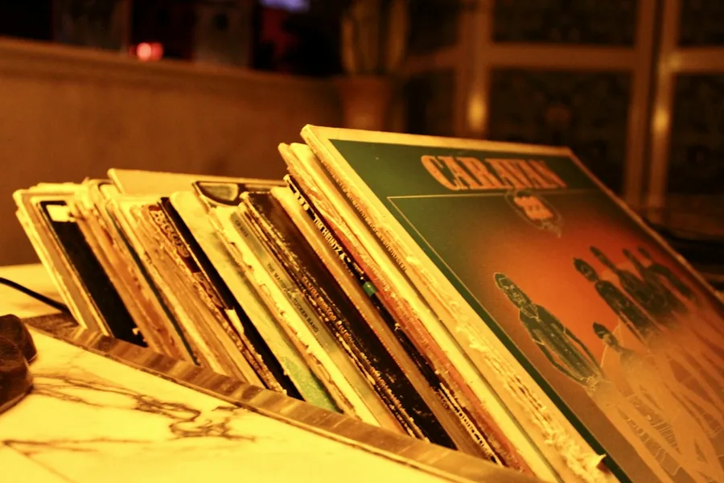
Una colección de tardes favoritas.
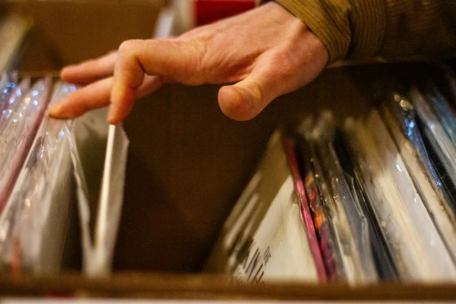
Revisar fundas también es escuchar.
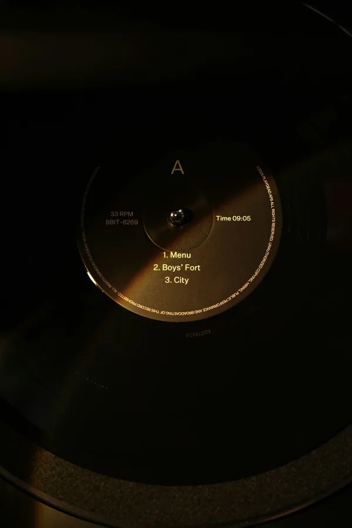
Un círculo que hace más lenta la tarde.
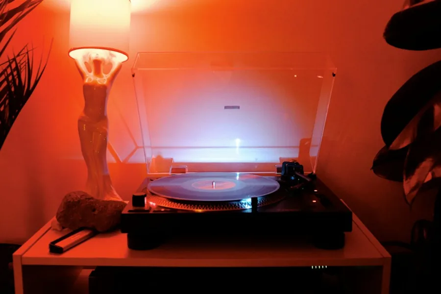
Cuando el sonido también tiene luz.
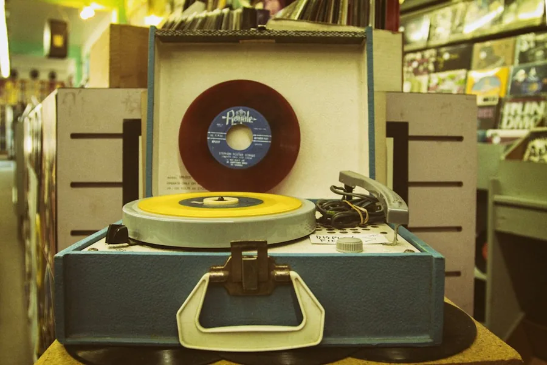
Una maleta llena de sobremesas.
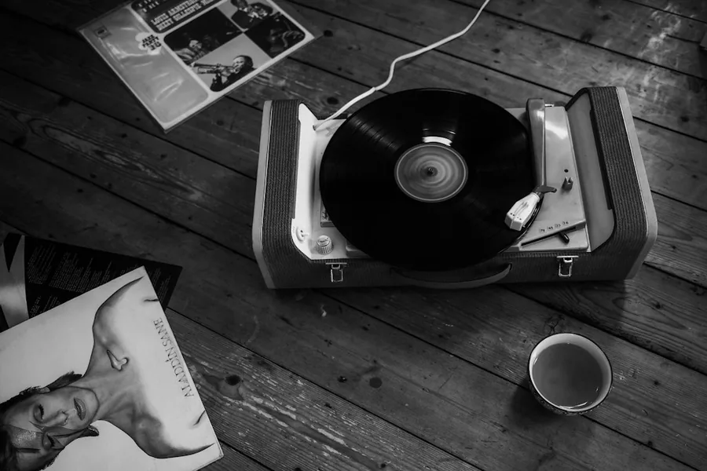
La tarde cabe en una mesa.
Una butaca, un libro y tiempo.
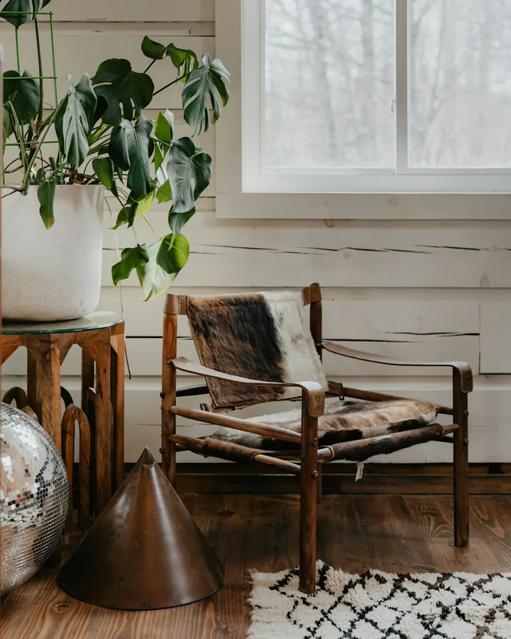
Madera y una silueta con memoria.
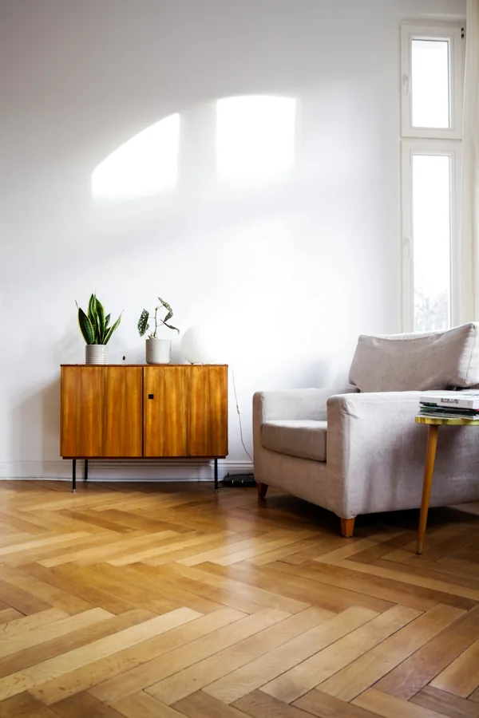
La madera también abriga.
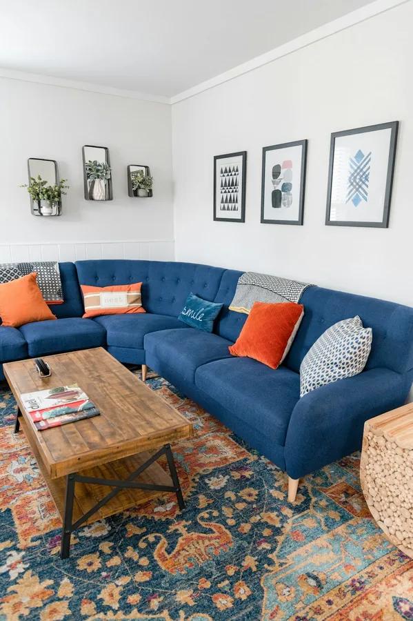
Un café que puede esperar.
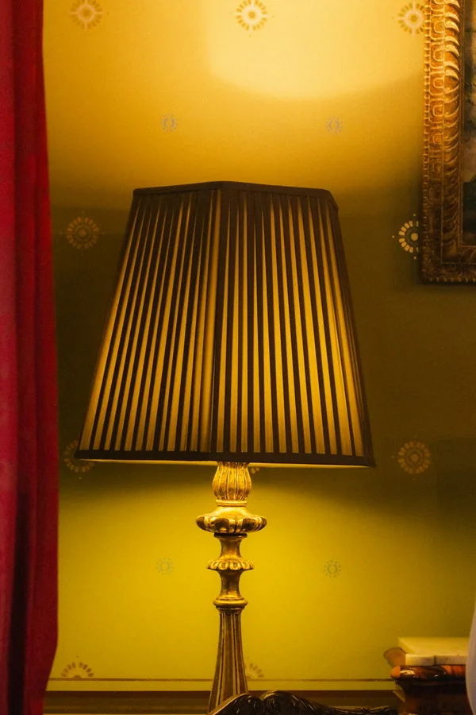
Una sombra suave al final del día.
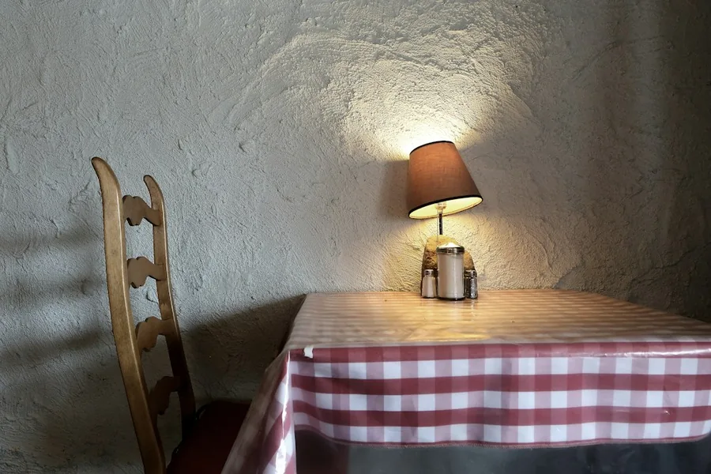
Un pequeño refugio de luz.
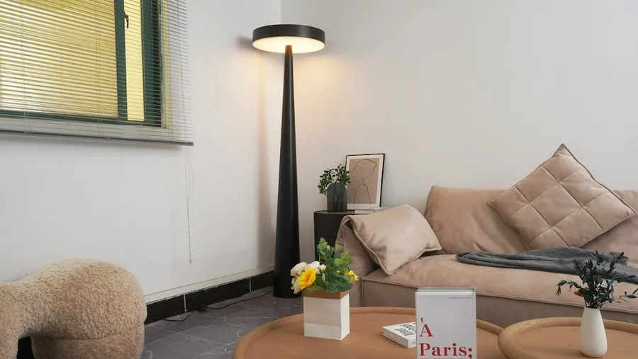
Iluminar sin ocupar el centro.
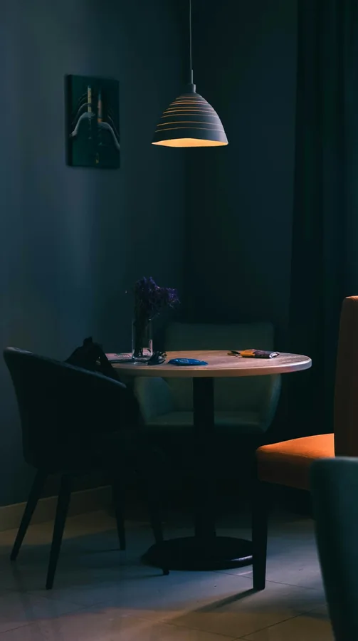
Un círculo cálido para conversar.
Probá otra palabra o dejá que aparezcan todas las piezas.
Podés llevarte una idea.
Lo demás puede esperar.
Fotografías reales de inspiración · Nombres editoriales de CASA GROOVE.Modelos 3D ilustrativos en seis piezas. Cada foto conserva su crédito.
Hay canciones que hacen de cualquier lugar una casa. Elegí un ambiente, bajá un poquito el volumen y dejá que la tarde siga.
Música ambiental original, creada para este espacio.
El sonido empieza cuando vos elegís.
Ahora sí, mové las cosas.
Probá un color, cambiá la luz y mirá
cómo el mismo espacio cuenta otra historia.
Activá la aceleración gráfica o probá otro navegador para explorar la sala.
Un pequeño espacio para experimentar. Los cambios son tuyos, por este ratito.
La que tiene tu color favorito. Un disco que vuelve a sonar. Un lugar para sentarse sin mirar la hora.
Casa Groove es una pequeña exploración de interiores, nostalgia y ganas de estar a gusto. Pasá, probá y quedate el tiempo que quieras.
Volver a mi rincón